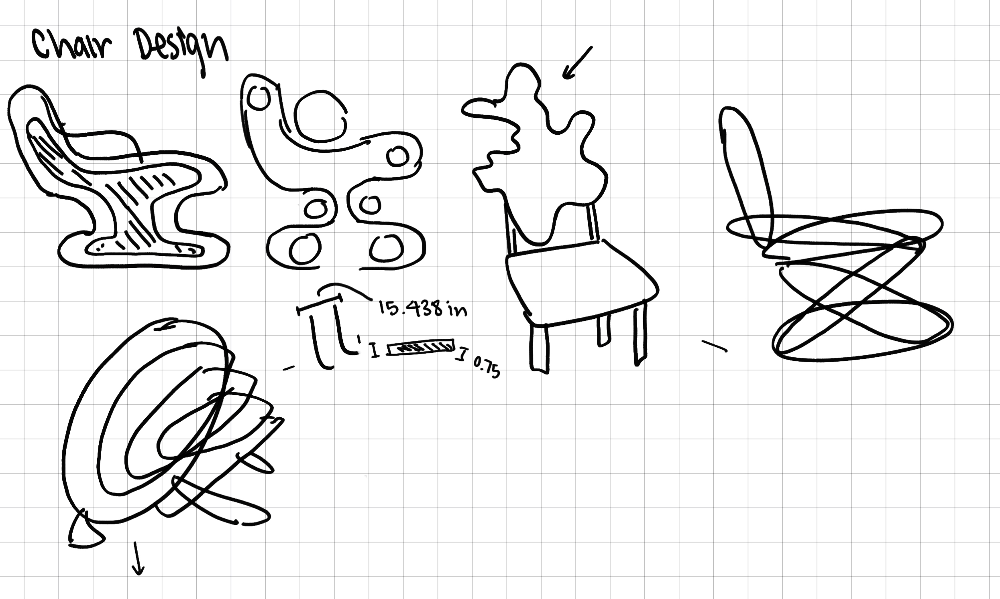
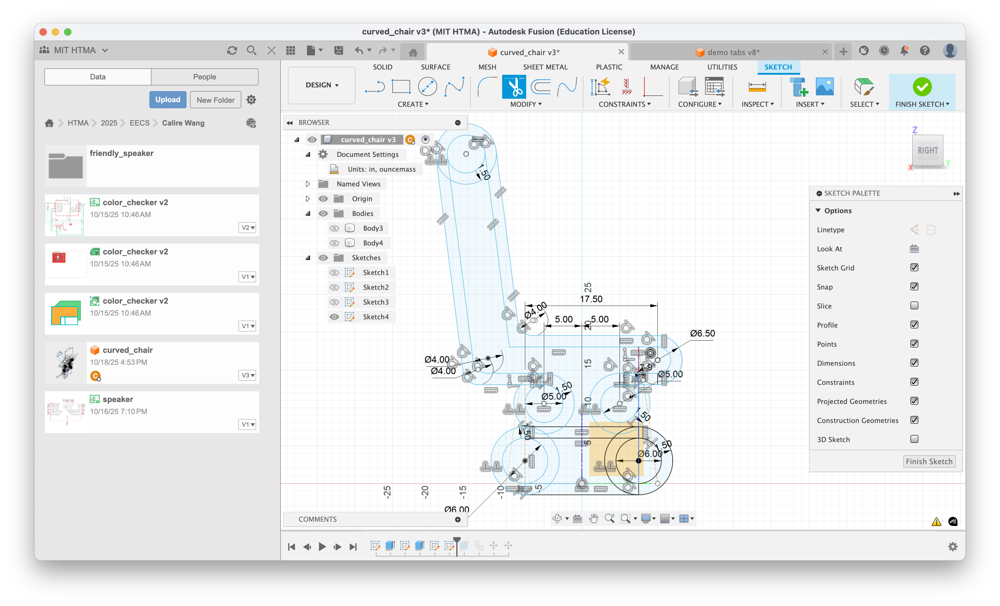
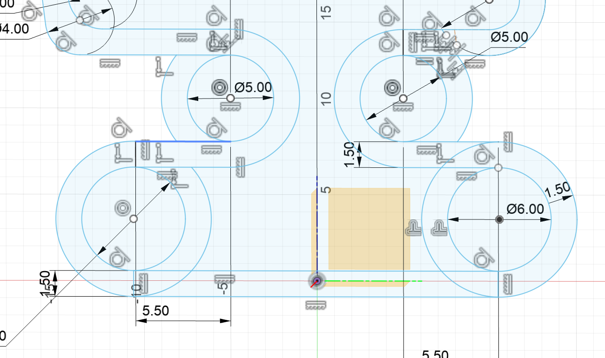
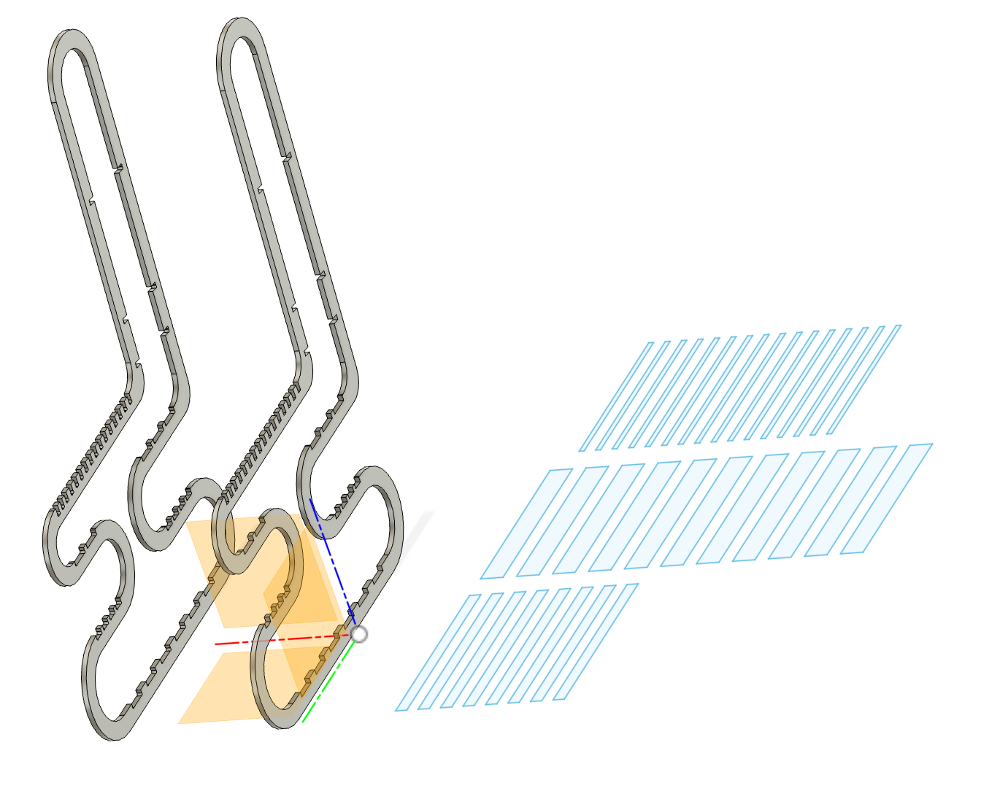
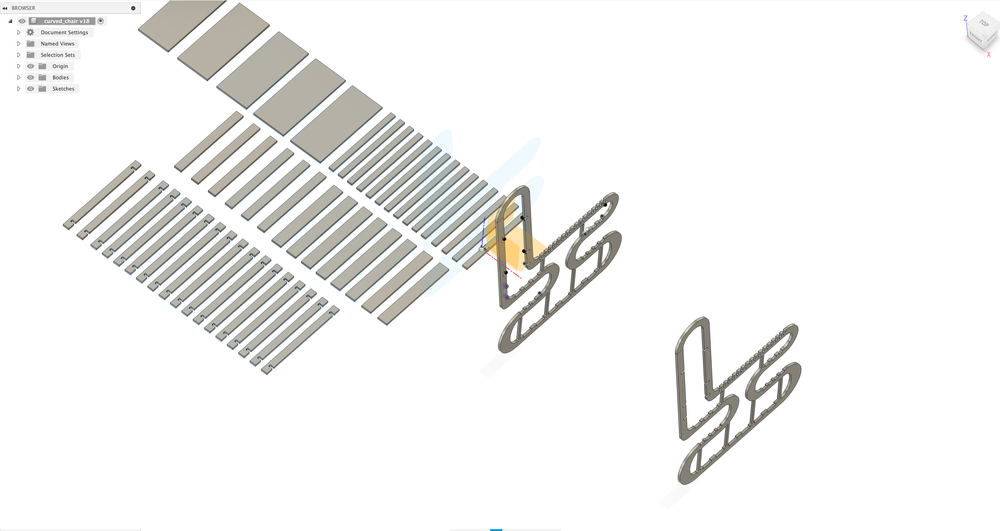
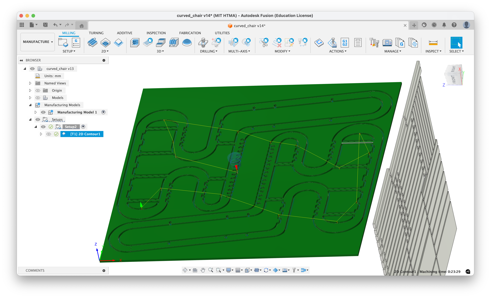
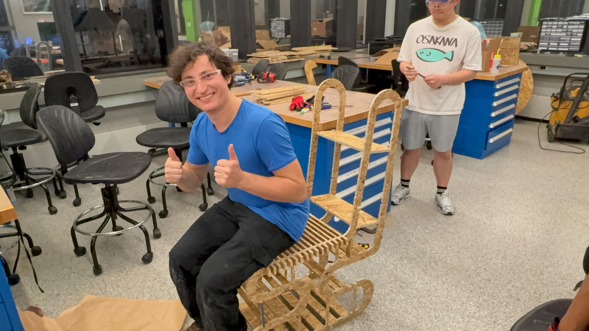
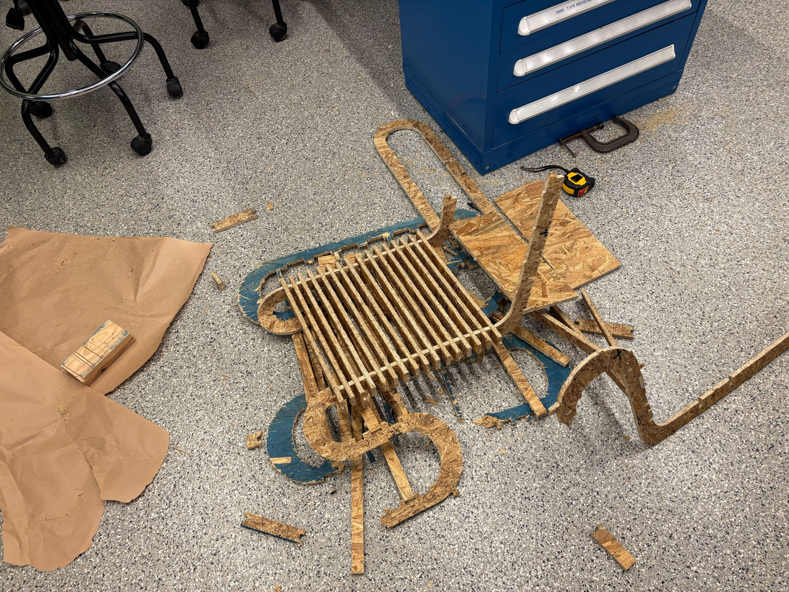

Week 7: Computer-Controlled Machining
This week we worked with the CNC milling machine in the EECS makerspace. We had the AVIC CNC machine. As part of the group project we tested different joint sizes and how well they hold with OSB (Oriented Stand Board) board, which is a type of wood that is made from small strips of wood bonded together with adhesives under heat and pressure. It's generally a weaker wood, so some joints might shear parts of the edges but is much cheaper.
Group Exploration
The initial training project was looking at different joint sizes and how well they hold with OSB board. We found that the exactly same sized joints (2 in gap with 2 in board) held the best (slightly stiff but likely preferable to a bit of a gap).
Chair Design
Initial Design
I'm super interested in chair design (which honestly started in middle school, when my teacher would always buy (fake) Eames chairs). The chair I designed this week was... not quite an Eames chair; I wanted to make something with a pretty form factor but could dual as something else, in this case, a bookshelf.

Using the first design here, I made a 3d model in Fusion360.


A lot of the dimensions were based on a chair in the N52 makerspace. The available wood / milling machine space was 48 by 48 in. Admittedly, the design here was mostly from my mind and not really based on physics simulations of what would work. The idea of this would be putting slats between two of these chair outlines to create the central sitting space.

Based on some feedback from Anthony, I added some additional supports, made the circular curves of the chair thicker (ellipsoid), and added hooks to the top slats so that they also don't slide left and right on the chair through the joints. In hindsight, I probably should have also added these to the bottom slats.

We use Fusion360's Manufacturing feature to arrange the parts and create a g-code file for the CNC machine. We used two different tools, a 3/8'' flat endmill running at 12000 RPM and a feedrate of 120 inches per minute and full depth cuts, and a a 1/4'' flat endmill but at a feedrate of 100 inches per minute for internal spaces and corners. We used this smaller tool for the dogbones joints that help hold the slats together.

After some finagling of making the height of the back of the chair shorter, we were able to fit it into the 48 by 48 in space of the OSB board manually. The arrangement of the slats were much easier, and we used the default object spacing of 0.0125 inches and with less tabs.
Chair Milling and Assembly


The slats were much more straightforward to arrange and mill, but the tabs were harder to easily cut, so I just removed the entire board and cleaned everything up with a bandsaw. (This job generated so much sawdust.)

The actual assembly of the chair took me a few hours. The challenge was getting the slats to fit into the joints snugly without breaking the rest of the chassis (which, admittedly, was not very sturdy). I tried using some superglue on the bottom, larger 2-in wide slats and otherwise just use a clamp. In addition, upon assembly, I added some vertical supports throughout the bottom of the chair to better support the weight of someone, which currently mostly just relied on the constitution of the chair itself.


Here are some videos and shots of people sitting on it!

Unfortunately... upon the fifth sit-test, the chair broke down.

Ultimately, if the wood was a bit stronger, it's likely the chair would have held up better. In addition, I should have had more diagonal supports since the issue was left and right movement. Also, the move of adding the spots for slats at the top of the bottom rung and not the bottom (which would have given the chair much more points of contact into the ground) would have helped a lot.